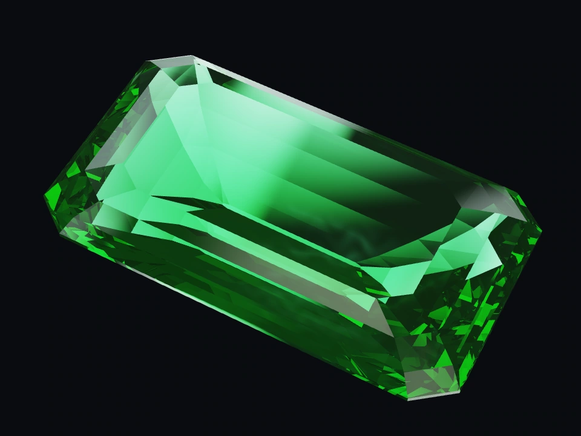
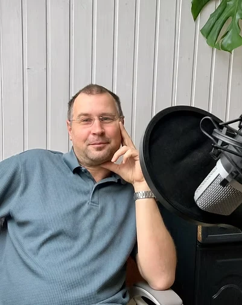

Achteckiger Stufenschliff
Der Smaragd.
Das Grün des Smaragds zeigt sich in seinen breiten Facetten. Entdecken Sie Farbe und Schliff im Edelsteinatlas von Dietmar Vogelmann.
Schmuckvorschau
Das Schmuckkabinett.
Eine Saphirkette aus Dietmars Katalog gibt einen ersten Einblick in den geplanten Schmuckshop.


Goldgezwitscher
Ein Tisch. Zwei Perspektiven.
Welche Geschichten erzählt sich die Goldbranche hinter den Kulissen? Dietmar lädt Gäste zum Videogespräch ein. Das Crowdfunding für das Format ist für den 1. Dezember 2026 geplant.
Den Videocast kennenlernen